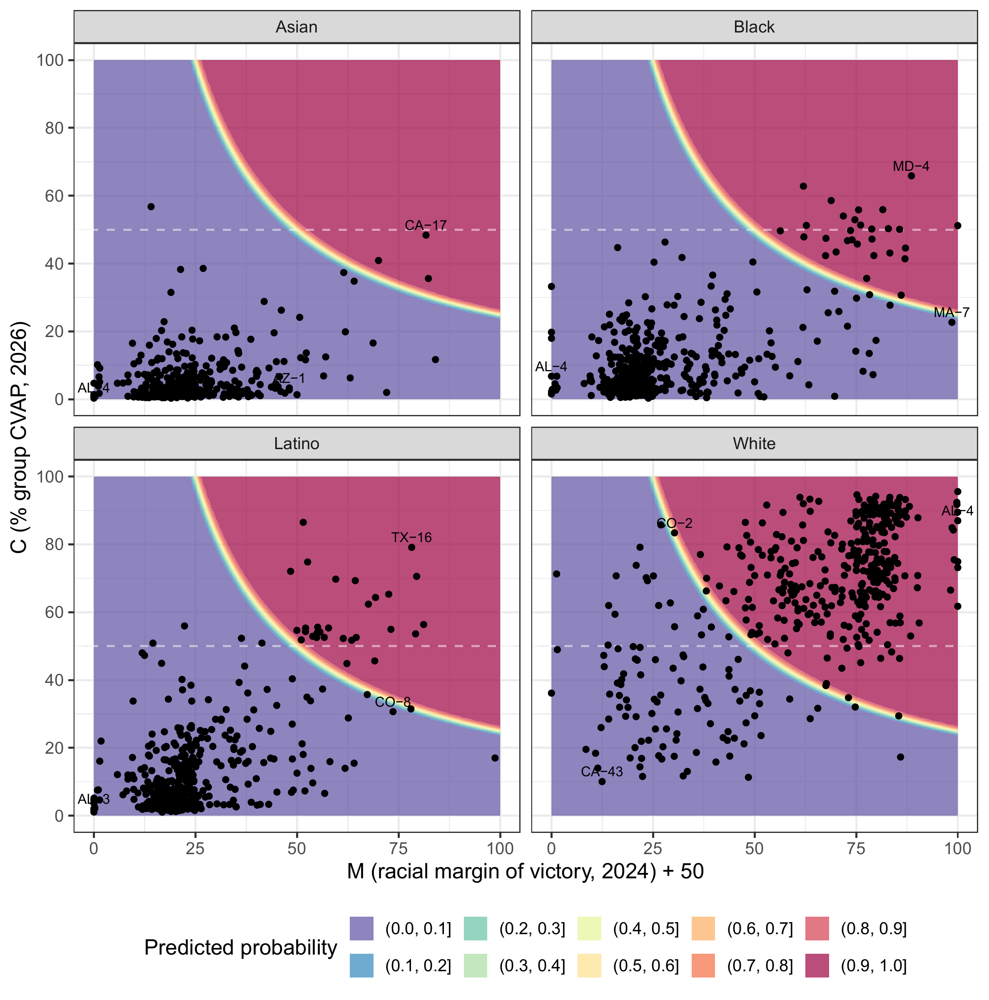
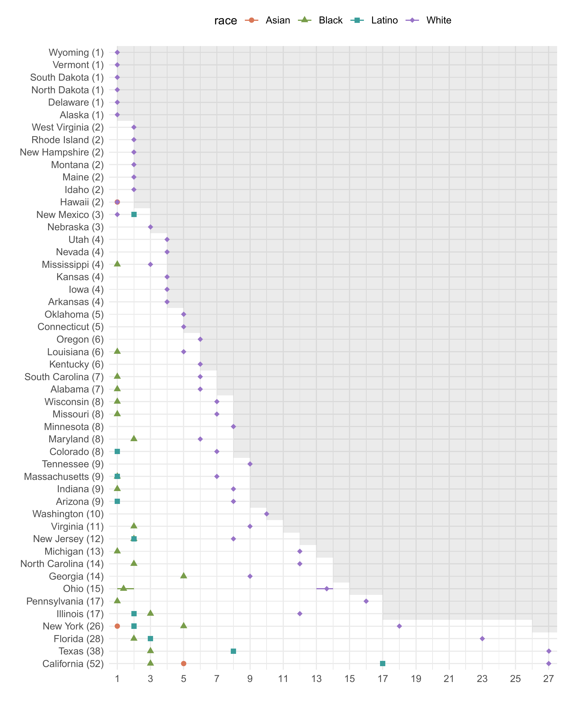
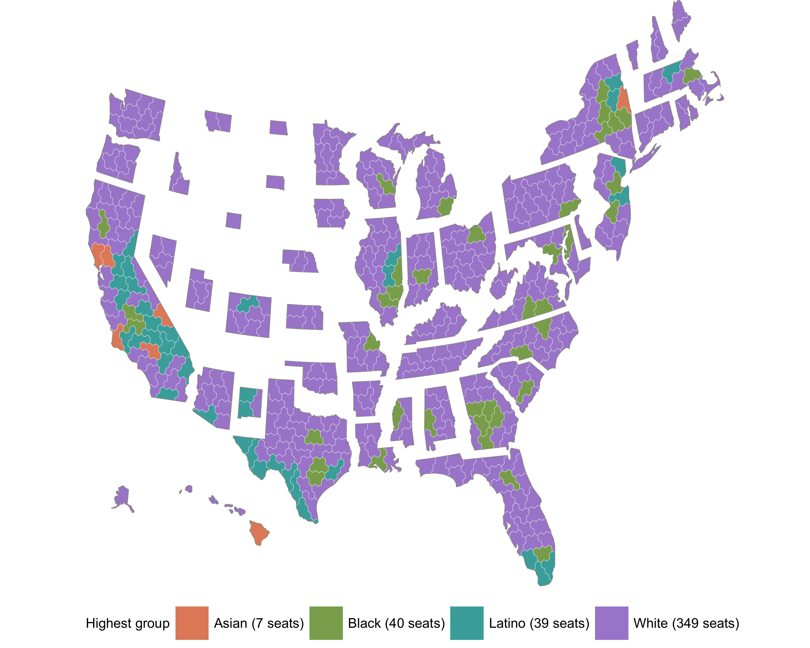
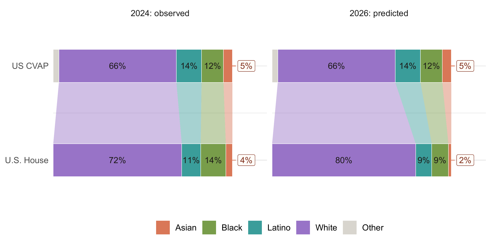

Pre-Analysis Plan: Predicting Racial Descriptive Representation in the U.S. Congress: The Case of the 2026 Midterm Elections
Yuki Atsusaka and Kolbe A. Dumas
Racial descriptive representation in the U.S. Congress has shaped debates over redistricting, voting rights, and partisan politics. We develop theory-based predictions of racial descriptive representation in the 2026 congressional elections. Drawing on a recent theoretical model with two inputs—district racial composition and the prior electoral performance of co-ethnic candidates—we generate district-level probabilistic predictions of winners’ racial group before Election Day. We predict that, in some districts, a focal racial group has a high probability of electoral victory even when it does not constitute a numerical majority. Nationally, we predict that the U.S. House will elect, on average, 7 Asian, 40 Black, 39 Latino, and 349 White legislators. These predictions imply White overrepresentation in the House in the 120th Congress by 14 percentage points, alongside Asian, Black, and Latino underrepresentation by 3, 3, and 5 percentage points, respectively, relative to each group’s share of the citizen voting-age population. If accurate, the forecasts will demonstrate the predictive value of local electoral context beyond district racial composition alone.
Read the pre-analysis plan on OSF or download the manuscript (PDF).
Data
Download the district-level predictions for the 2026 election cycle.
Download district-level predictions (CSV)
District-level predictions

State-level predictions

National-level predictions

Representation gap
